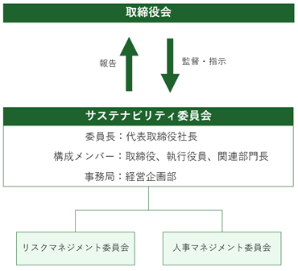
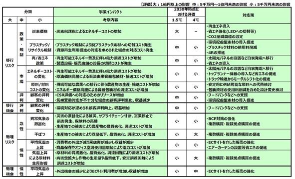

当社グループの経営方針、経営環境及び対処すべき課題等は、以下のとおりであります。
なお、文中の将来に関する事項は、当連結会計年度末現在において当社グループが判断したものであります。
(1)会社の経営の基本方針
経営理念『Be Prime,Be Sweet.』は、すべてはお客様の笑顔のために、最高のおいしさを追求し、安心・安全な品質を確保し、最良のサービスを提供するため、一流をめざして日々進化することで、常に感動をお届けすることを約束したメッセージです。
企業スローガン『こころつなぐ。笑顔かがやく。』は、スイーツを通して「こころ」と「こころ」をつなぐ架け橋となり、かがやく笑顔を広げたいという想いを表しました。スイーツには疲れた心を癒し、心を結び、感動や歓びを記憶に刻む力があります。そのようなスイーツでお客様に笑顔をお届けしたい、それこそがモロゾフの原点です。モロゾフのスイーツは、わくわくする感動、ドキドキする感動をお届けするものでなければなりません。この企業スローガンを通して、当社の想いをお客様へしっかりと伝えてまいります。
(2)目標とする経営指標
当社グループは、売上高は維持しつつも、変革を続けることで、安定した利益水準を確保していく方針としており、売上高および、事業本来の収益力を示す営業利益率を目標数値としております。
当社グループを取り巻く環境は、少子高齢化や人口減少に加え、原材料価格の大幅な上昇や、人手不足の顕在化など、引き続き予断を許さない状況にあります。このような環境を踏まえ、2024年１月期から中期経営計画「つなぐ ～next stage 2031～」をスタートさせました。100周年を最終年度とし、2024年１月期～2032年１月期の９年間を「Step１」「Step２」「Step３」の３段階に区切って実行し、目標数値の達成に向けて、各種戦略の推進と企業体質の強化に努めてまいります。
「Step１」（2024年１月期～2026年１月期）の最終年度の目標数値は、2023年１月30日に売上高33,200百万円、営業利益率6.0％として発表いたしました。しかしながら、初年度にあたります2024年１月期より、新型コロナウイルス感染症の収束にともない百貨店を中心に人流・商況が大きく回復したこと、「焼菓子」などによる成長戦略が好調にスタートしたことにより、閉店・退店の影響はあったものの、売上高は想定以上に大きく伸長いたしました。
また、損益面では、原材料価格の高騰や物流コストの増加などコストアップ要因は想定どおりでしたが、原材料価格高騰を吸収するための施策や、販売生産性の向上策などが奏功したことで、営業利益率は目標数値策定時の想定を上回る結果となりました。
このような状況を踏まえつつ、今後の戦略の実現性を見据えたうえで、2024年１月30日に「Step１」の最終年度の目標数値を売上高35,500百万円、営業利益率6.5％に修正しております。
(3)中長期的な会社の経営戦略および対処すべき課題
今後の当社グループを取り巻く環境は、売上面におきましては、少子高齢化による人口減少、地方や郊外百貨店の店舗閉鎖、バレンタインや中元、歳暮などのフォーマルギフトの市場の縮小が想定されます。また、カカオなどの原材料価格の高騰が続くとともに、電気・ガス等のエネルギーや物流コストも上昇しており、売上原価率の上昇が予想されます。人員面では、人手不足による人件費の上昇が今後も続いていくと思われます。一方、生産設備面でも、工場や物流施設の老朽化対策や生産性向上のための投資が必要となるなど、多くの課題を抱えています。
このような課題を踏まえて、中長期ビジョン「企業価値の向上」「ブランド価値の向上」「社会的価値の向上」を達成すべく、2024年１月期から中期経営計画「つなぐ ～next stage 2031～」をスタートしております。
このビジョンを達成するために、①新たなる「成長戦略」の実現、②コスト抑制とさらなる生産性向上、③人材確保と従業員満足度向上、を中長期戦略テーマとして取り組んでまいります。
まず、最初のテーマである「新たなる『成長戦略』の実現」を図るために、焼菓子によって新たな価値と市場を創造し、成長基盤をつくってまいります。焼菓子はパーソナルやカジュアルギフトに適しており、気候や季節に左右されず年間を通じて販売可能です。また、既存の設備や技術により商品開発や生産が可能であり、当社グループの強みを活かすことができます。
この新たなる「成長戦略」を実現していくために、「商品・ブランド戦略」「市場戦略」「生産・物流戦略」の３つの戦略を連係させて推進いたします。
① 商品・ブランド戦略
新しい焼菓子の定番商品や希少性の高い新プロダクトブランドを開発するとともに、新たなマーケットを創造し、ブランド価値の向上と成長基盤の強化を図ります。
② 市場戦略
商品・ブランド戦略で開発された新たな商品・ブランドにより新プロダクト店舗を拡大するとともに、エリア限定商品の投入により新たな市場を開拓いたします。また、相手先企業保有コンテンツの活用によるＯＥＭ、ＯＤＭ、アライアンス等により、ＢtoＢビジネスを進めることで販売機会と利益の創出を図ります。
③ 生産・物流戦略
商品・ブランド戦略および市場戦略に柔軟に対応できるよう、工場の建て替えや移転を進めるとともに、焼菓子製造ラインの新設や設備の強化による増産体制の確立を図り、安定した焼菓子の供給体制を確立いたします。また物流戦略では、新たな物流センターを設けるなど機能を再構築し、安定した物流体制の確立を目指します。
２つ目のテーマである「コスト抑制とさらなる生産性の向上」を図るため、店舗運営の効率化を進めるとともに、工場では設備の自動化や省人化を図ってまいります。
店舗運営の効率化推進につきましては、既存店舗の運営方法を見直すことで、店舗のローコストオペレーション化を図るとともに、お客様にとっても、見やすく、選びやすく、買いやすい店舗スタイルに転換してまいります。
また、生産面では、工場の建替えや移転にあわせて生産ラインを見直し、自動化設備を強化することにより、生産能力の増強と省人化を図り、さらなる生産性の向上に繋げてまいります。
３つ目のテーマは「人材確保と従業員満足度向上」です。人事面での課題としては、管理職層の定年退職と中堅層の人材不足、生産や販売の現場での従業員の採用難、女性社員の活躍促進などがあります。これらの課題を解決するために、「人的資本」を意識した、人材の確保と社員満足度向上のための投資と制度見直しを進めてまいります。
また、企業価値向上に向け、中期経営計画９年間（Step１～Step３）におけるトータルでのフリーキャッシュ・フローの配分方針を新たに策定し、戦略的設備投資、人的資本投資および株主還元に適切に分配してまいります。サステナビリティへの取り組みとしては、サステナビリティ委員会を設置し、ガバナンスおよびリスク管理体制の再構築を図るとともに、気候変動への取り組み強化や人的資本に関する戦略および目標を設定し、企業価値の向上と持続可能な社会の実現に貢献してまいります。
時代に即したお客様接点を創造し、お客様に提供する新たな価値を創造することで、未来につながる経営基盤を築くとともに、新たな成長戦略を講じて、景気変動や環境変化に左右されない、安定した収益の確保とサステナビリティの実現を目指してまいります。
当社グループのサステナビリティに関する考え方及び取組は、次のとおりであります。
なお、文中の将来に関する事項は、当連結会計年度末において当社グループが判断したものであります。
（１）サステナビリティに関する取組
当社グループは企業スローガンに「こころつなぐ。笑顔かがやく。」を掲げ、スイーツを通してすべてのお客様に笑顔を届けることをめざしております。お客様をはじめとするすべてのステークホルダーの満足度の向上に取り組むことで、持続的な企業価値とブランド価値の向上を図るとともに、「企業」と「社会」の持続可能性の両立を目指して、サステナビリティへの取り組みを推進いたします。
①ガバナンス
当社グループは、サステナビリティへの取り組み推進を図ることを目的に、「サステナビリティ委員会」を設置しています。
サステナビリティ委員会は代表取締役社長を委員長として、取締役、執行役員、関連部門長で構成し、原則年２回開催いたします。決定事項は必要に応じて取締役会に報告され、取締役会は重要事項について指示を行うなど、監督責任を負います。また、具体的な実務作業や開示資料の取り纏めのため「サステナビリティワーキングチーム」を置きます。
サステナビリティ委員会の下部組織である「リスクマネジメント委員会」「人事マネジメント委員会」については業務執行取締役と執行役員、関連部門長で構成し、決定事項はサステナビリティ委員会に報告する体制といたします。

②リスク管理
＜気候関連リスク＞
a)気候関連リスクの特定・評価プロセス
当社グループではサステナビリティ委員会を中心に気候関連リスクの特定及び評価、管理を行っています。サステナビリティ委員会は気候関連リスクの洗い出しを行った後、定性・定量の両面から評価し重要課題を特定します。
b)気候関連リスクの管理プロセス
サステナビリティ委員会で特定・評価された気候関連リスクの具体的な対応策は、同委員会より必要に応じて取締役会へ報告され、取締役会では指示を行うなど監督責任を負っています。
＜その他のリスク＞
a)その他のリスクの特定・評価プロセス
サステナビリティ委員会の下部組織であるリスクマネジメント委員会で網羅的なリスクの洗い出しが行われた後、定性・定量の両面から評価し重要課題が特定されます。
b)その他のリスクの管理プロセス
特定・評価された網羅的なリスクの具体的な対応策はリスクマネジメント委員会にて審議及び承認され、サステナビリティ委員会へ報告されます。網羅的なリスクへの対応については、リスクマネジメント委員会が対応策の実施と定期的な進捗管理を行っています。
（２）気候変動への対応（TCFDに基づく開示）
①戦略
a)特定した気候関連リスク及び機会
当社では気候変動課題について、脱炭素社会への移行の際に発生する移行リスク/機会と現状のまま気温上昇が進んだ場合に発生する物理リスク/機会に分け、それぞれ洗い出しを行っています。
b)特定した気候関連リスク及び機会が事業へ及ぼす影響
特定したリスクと機会について事業への影響を評価するため、移行リスク/機会の影響が最大になる２℃未満の世界と物理リスク/機会の影響が最大になる４℃の世界を対象に2030年時点における事業への影響を定性・定量の両面から網羅的に分析しています。
c)特定した気候変動リスク及び機会に対する対応策
特定、評価したリスク/機会について事業のレジリエンス性を高めるため対応策の実施や検討を行っています。特に影響が大きい炭素価格導入による影響については、CO2排出量の削減目標を設定し、達成に向け再生可能エネルギーの導入や省エネルギーの推進に取り組んでいます。
a)b)c)リスク/機会一覧

②指標及び目標
当社は、グループ各社と連携してサステナビリティに関する重要課題に取り組んでおりますが、具体的な実績及び目標に関しては連結ベースの数値ではなく、当社の数値を記載しております。
a)気候関連リスクと機会を評価するための指標
当社では、気候関連リスクと機会を評価するためCO2排出量を指標としています。また、CO2排出量削減目標を設けるとともに定期的なCO2排出量算定を行うことで気候関連リスクと機会の評価並びに進捗管理に努めています。
b)Scope１,２のCO2排出量
第93期のScope１,２のCO2排出量の詳細につきましては、当社ホームページにて開示しております。
以下のURLよりご参照ください。
https://www.morozoff.co.jp/company_ir/csr/environment/
※CO2排出量の実績につきましては、毎年８月に更新する予定です。
c)気候関連リスクと機会を管理するための目標
当社では気候関連リスクと機会を管理するため、2014年度を基準としてCO2排出量を2030年度に46％削減することを目標としています。
目標達成に向けて太陽光パネルの設置など再生可能エネルギーの導入を促進する他、LEDへの切り替えといった省エネ活動を推進しています。
（３）人的資本（人材の多様性確保を含む）に関する戦略及び目標に関する事項
①戦略
a)人材育成方針と社内環境整備に関する方針
当社はすべての従業員を会社にとっての財産であるととらえ、一人ひとりの人格や個性を尊重しながら、会社と従業員がともに成長できる企業を目指し、また従業員が安心して、健やかに、生きがいを持って働けるような各種制度や職場環境を整備することを、基本理念としております。
これを実行するための方針を次の通り定めております。
１．適宜適切に有能な人材（人財）の確保に努めます。
２．性別、年齢、宗教、人種、身体的特徴の違いなどによる差別を排除した公平な雇用・処遇を行います。
３．一人ひとりの従業員が創造性を発揮して、常に自分を高め、持っている個性・能力を最大限に発揮して自己実現が図れるよう能力開発を行います。
４．従業員の健康維持増進、快適な職場環境確保、活気溢れる企業風土形成に努めます。
５．ワーク・ライフ・バランスを推進し、多様化する就業形態、就業意識に対応できる雇用形態の実現を目指します。
b)女性の活躍推進について
さまざまな事業領域において多くの女性が活躍しており、その活躍をサポートしています。
2008年に「子育てサポート企業」として、厚生労働大臣の認定（くるみん認定）、2023年には兵庫県内企業の女性活躍を促進するための制度である「ひょうご・こうべ女性活躍推進企業（ミモザ企業）」に認定されました。
②指標及び目標
当社は、グループ各社と連携してサステナビリティに関する重要課題に取り組んでおりますが、具体的な実績及び目標に関しては連結ベースの数値ではなく、当社の数値を記載しております。
|
指標 |
目標（2026年３月末） |
実績（2024年１月末） |
|
管理職に占める女性労働者の割合 |
15％以上 |
12.2％ |
|
育児短時間勤務利用者率（※１） |
50％以上 |
43.5％ |
|
子育て女性の勤務率（※２） |
30％以上 |
26.9％ |
（※１）育児短時間勤務利用者率：育児短時間勤務利用者÷小学校就学以前の子女を持つ女性社員数
（※２）子育て女性の勤務率：子育て女性（18歳未満の子がいる女性）人数÷既婚女性社員数
有価証券報告書に記載した事業の状況、経理の状況等に関する事項のうち、経営者が当社グループの財政状態、経営成績及びキャッシュ・フローの状況に重要な影響を及ぼす可能性のあると認識している主要なリスクは以下のとおりであります。
なお、文中における将来に対する事項は、本書提出日現在において当社グループが判断したものであり、当社グループの事業に関連するリスクを全て網羅するものではありません。
(1)食の安心、安全について
近年、食品の安心、安全に関する消費者の関心はますます高まっております。また、食品業界におきましては、食品表示についての偽装や、消費または賞味期限についての虚偽表示や誤表示など、食の安心、安全を揺るがす問題が発生しております。
このリスク回避のために当社グループではＨＡＣＣＰシステムを取り入れた全社品質保証制度に基づき、各種品質関連マニュアルの徹底による事前防止システムを確立し、食の安心、安全について万全の体制で臨むとともに、問題が発生した場合に備え原因をトレースできる体制を構築しております。問題発生時の対応マニュアルの整備や、損失が発生した場合に備えて生産物賠償責任保険の付保も行っております。
しかし、原材料や製造工程などに想定の範囲を超えた問題が発生して、大規模な製品回収や製造物責任が発生した場合には、当社グループの経営成績および財政状態に影響を及ぼす可能性があります。
(2)原材料の調達および価格の変動について
当社グループの使用する原料は、主に農産物であり、天候不順、自然災害による収穫量の増減、需給状況などにより仕入価格が変動する可能性があります。輸入原料の場合には、為替変動によっても仕入価格が変動する可能性があります。また、原油価格の変動により、石油製品である容器類、包装材料の仕入価格が変動する可能性があります。こうしたリスクに対しては、安定供給先の確保、調達先の多様化、事前の価格交渉、適切なタイミングでの価格決定等によりリスクを回避する努力を行っております。
しかし、予期せぬ突発的事情により原材料の安定的調達ができなくなった場合や仕入価格が高騰した場合には、当社グループの経営成績および財政状態に影響を及ぼす可能性があります。
(3)得意先の経営破綻等による影響について
当社グループは、直営店、全国主要百貨店等を中心とした直接販売の方法をとっております。販売先の経営破綻により、債権が回収不能となる可能性があります。当社グループでは、専属の部署が調査機関や業界情報の活用により継続的な情報収集や与信管理を行っております。
しかし、予期せぬ取引先の経営破綻が発生した場合には、当社グループの経営成績および財政状態に影響を及ぼす可能性があります。
(4)法的規制について
当社グループは、食品衛生法、食品表示法、ＰＬ法（製造物責任法）、不当景品類及び不当表示防止法や環境・リサイクル関連法規など、各種の法的規制を受けております。これらの規制を遵守できない場合には、当社グループの活動が制限される可能性や、コストの増加、ブランドの毀損などを招く可能性があります。当社グループとしては、各種規定の整備によるほか、各主管部門と法務部門が連携しすべての法的規制を遵守するように取り組んでおります。
しかし、法令違反等によりこれらの許認可が取消された場合や、業務の停止命令を受けた場合には、当社グループの経営成績および財政状態に影響を及ぼす可能性があります。
(5)自然災害について
当社グループは、全国の店舗において販売しており、また各工場で生産活動を行っております。これらの地域において地震や台風などの自然災害が発生した場合に備えて、危機管理マニュアルを整備しており、その中に地震や風水害等が発生した場合の対応を定めております。特に地震についてはＢＣＰ（事業継続計画）を整備するとともに、従業員に「震災ハンドブック」も配布しております。また、防災訓練の実施、緊急情報連絡システムなどの連絡体制を整備し、緊急時に備えております。
しかし、これらの危機管理対策の想定を超えた大規模自然災害が発生した場合には、当社グループの経営成績および財政状態に影響を及ぼす可能性があります。
(6)新型感染症について
新しい感染症の世界的な拡大により、人の移動の制限や店舗の閉店、工場の閉鎖などが発生する可能性があります。当社グループとしては、全社品質保証制度に基づき厳格な衛生管理をおこなうとともに、新型感染症を想定したＢＣＰ（事業継続計画）を整備しており、これらに基づき感染拡大の防止に努めてまいります。
しかし、新型の重大な感染症が拡大した場合には、移動の制限や店舗の閉鎖など、様々な活動の自粛により消費活動が急激に縮小する場合があります。また、従業員に感染症が拡大した場合には、一時的に工場の操業や店舗での販売を停止することもあり、当社グループの経営成績および財政状態に影響を及ぼす可能性があります。
(7)情報セキュリティについて
当社グループは、経営に関する重要情報や個人に関する機密情報を保持しております。これらの情報システムの運用につきましては、コンピューターウイルス感染によるシステム障害やハッキングによる被害、および外部への社内情報の漏洩が生じないように万全の体策を講じております。
しかし、標的型攻撃メールや想定を超えた技術による情報システムへの不正アクセス、コンピューターウイルスの感染などにより、情報システムに障害が発生するリスクや、社内情報が外部に漏洩するリスクがあり、こうした事態が発生した場合は、事業活動に支障をきたすとともに、当社グループの経営成績および財政状態に影響を及ぼす可能性があります。
(8)固定資産の減損について
当社グループは、工場の老朽化や生産性向上を図るために工場や製造機械への設備投資や、売上増強のために店舗の新設や改装への投資をおこなっております。投資にあたっては、その目的や意義について十分に検討し、キャッシュ・フローや投資採算を精査したうえで、投資の決定を行っております。
しかし、経営環境の変化等で、その収益性の低下により投資額の回収が見込めなくなった場合には、帳簿価額を減額し、当該減少額を減損損失として計上することとなるため、当社グループの経営成績および財政状態に影響を及ぼす可能性があります。
(9)キャッシュ・フローの変動について
当社グループは、営業活動によるキャッシュ・フローによりほぼ投資および財務に係る資金を賄い得ており、自己資金比率も高い水準で推移しております。
しかし、新しい感染症の拡大による営業の自粛や消費の急激な落ち込みにより、収支状況が悪化したような場合には、営業活動によるキャッシュ・フローにも大きな影響がでる場合があります。
(10)海外での事業展開について
当社グループは、海外でも事業展開を図っておりますが、現地の政治経済的な要因の変動、予期しない法律や規制などの改廃、地震等の自然災害、急激な為替変動などの不測の事態が発生した場合には、当社グループの経営成績および財政状態に影響を及ぼす可能性があります。
当社グループでは、各国での早期の情報収集に努めることで、戦略の見直しを適宜・適切におこなうとともに、現地に適切に指導できる体制構築に努めております。
(11)気候変動の影響について
地球温暖化に伴う気候変動の影響が、自然災害の増加や自然生態系の変化といった形で顕在化し、社会にも多大な影響を及ぼしつつあります。当社グループの商品の主原料は、カカオ類、チーズなどの乳製品類、ナッツ類等の農畜産物であり、生産地での気候変動の影響による不作が生じた場合、原料調達価格の上昇および必要量の不足に伴う販売機会の損失などが想定されます。また、気候変動に伴う自然災害などの悪影響が想定範囲を超えた場合、生産、物流、販売体制に支障をきたすことが想定され、当社グループの業績および財政状況に影響を及ぼす可能性があります。
当社グループは、環境負荷低減のため、事業活動における省エネルギーの推進や再生可能エネルギーの活用によりCO2排出量の削減を図るとともに、食品廃棄物の削減、再資源化の促進に努めております。
今後も継続的に気候変動が事業に及ぼす影響を把握し、適切に対応できる体制を整備してまいります。
(1)経営成績等の状況の概要
当連結会計年度における当社グループの財政状態、経営成績及びキャッシュ・フローの状況の概要は次のとおりであります。
なお、文中の将来に関する事項は、当連結会計年度末現在において当社グループが判断したものであります。
①経営成績の状況
当連結会計年度における当社グループを取り巻く環境は、新型コロナウイルス感染症が５類に移行したことや行動制限が緩和されたことで、社会経済活動は一層の正常化に向かい、またインバウンド需要も増加したことにより、景気は緩やかに回復いたしました。しかし、原材料価格の高騰や、採用難による人手不足の深刻化、物価の上昇による消費マインドの悪化懸念など、依然として先行きは不透明な状況が続いております。
このような環境下、当社グループは企業スローガンである『こころつなぐ。笑顔かがやく。』のもと、スイーツを通して心豊かな生活をお届けすることを基本姿勢として、安心、安全かつ高品質な商品をお客様に提供することに注力しました。
売上面につきましては、卵不足の影響はあったものの、バレンタイン商戦が堅調に推移したことに加え、人流の回復に伴い焼菓子やシーズンギフト、土産商品などが好調であったことにより、当連結会計年度の売上高は34,933百万円（前期比7.5％増）となりました。
損益面につきましては、原材料価格の高騰などの影響により売上原価率は上昇したものの、増収効果に加えて、店舗や工場の人員体制の最適化などにより利益の創出に努め、営業利益は2,474百万円（前期比2.1％増）となりました。また、前期は営業外収益に受取補償金を計上したこともあり、経常利益は2,517百万円（前期比3.7％減）、親会社株主に帰属する当期純利益は1,715百万円（前期比0.7％増）となりました。
セグメントごとの経営成績は、次のとおりであります。
［洋菓子製造販売事業］
干菓子につきましては、経済活動の正常化により需要が活性化したことで、バレンタイン商品をはじめとするチョコレートに加え、「アルカディア」などの焼菓子や、シーズンギフトや土産商品などにつきましても堅調に推移しました。また、バターにこだわった焼菓子ブランド「ガレット オ ブール」を2023年４月に大丸東京店へ、９月に髙島屋京都店へオープンしたことの寄与もあり、売上高は順調に推移しました。
洋生菓子につきましても、卵の供給制限により一部商品の販売休止などの影響はあったものの、カスタードプリンについては商品供給量の確保に努めるとともに、卵の使用量が少ないシーズンプリンやチーズケーキ等を積極的に販売いたしました。
その結果、当事業の売上高は33,057百万円（前期比7.1％増）となりました。
［喫茶・レストラン事業］
喫茶・レストラン事業につきましては、人流の回復に伴う売上高の増加に加え、メニューの改変などにより売上拡大を図った結果、売上高は1,876百万円（前期比15.1％増）となりました。
②財政状態の概況
当連結会計年度末における資産は、前連結会計年度末に比べ1,323百万円増加し、27,919百万円となりました。資産の増減の主なものは、現金及び預金の増加額993百万円、商品及び製品の増加額227百万円、売掛金の増加額214百万円、有形固定資産の減少額197百万円等であります。負債は前連結会計年度末に比べ184百万円増加し、8,199百万円となりました。これは主に電子記録債務の増加額192百万円、支払手形及び買掛金の増加額164百万円、短期借入金の減少額80百万円、未払法人税等の減少額55百万円等によるものであります。純資産は前連結会計年度末に比べ1,139百万円増加し、19,719百万円となりました。これは主に利益剰余金の増加額1,457百万円、為替換算調整勘定の増加額86百万円、自己株式の取得による減少額453百万円等によるものであります。
③キャッシュ・フローの状況
当連結会計年度における現金及び現金同等物は、前連結会計年度末に比べ993百万円増加し（ＶＩＳＵＡＬ ＨＯＮＧ ＫＯＮＧ ＬＩＭＩＴＥＤの期首残高307百万円を含む）、当連結会計年度末には6,640百万円となりました。
当連結会計年度における各キャッシュ・フローの状況とそれらの要因は、次のとおりであります。
（営業活動によるキャッシュ・フロー）
当連結会計年度における営業活動によるキャッシュ・フローは、税金等調整前当期純利益の計上、減価償却費の計上、棚卸資産の増加、法人税等の支払額等により、2,117百万円の収入（前連結会計年度は2,200百万円の収入）となりました。
（投資活動によるキャッシュ・フロー）
当連結会計年度における投資活動によるキャッシュ・フローは、有価証券の売却及び償還による収入、定期預金の払戻による収入、投資有価証券の売却による収入、有価証券の取得による支出、定期預金の預入による支出等により、456百万円の支出（前連結会計年度は1,540百万円の支出）となりました。
（財務活動によるキャッシュ・フロー）
当連結会計年度における財務活動によるキャッシュ・フローは、自己株式の増加、配当金の支払等により、1,011百万円の支出（前連結会計年度は440百万円の支出）となりました。
④生産、受注及び販売の実績
ａ.生産実績
セグメントのうち、洋菓子製造販売事業において生産活動を行っており、当連結会計年度における生産実績を示すと、次のとおりであります。
|
セグメントの名称 |
当連結会計年度 （自 2023年２月１日 至 2024年１月31日） |
前期比（％） |
|
洋菓子製造販売事業計（千円） |
37,742,484 |
107.1 |
|
（内訳） |
|
|
|
干菓子群（千円） |
28,927,640 |
108.9 |
|
洋生菓子群（千円） |
8,814,844 |
101.4 |
（注）１．生産実績は小売価額によっております。
２．干菓子群、洋生菓子群にはその他菓子群製品及び半製品が含まれております。
３．他に他社製品仕入実績が仕入金額で952,736千円あります。
ｂ.受注実績
当社グループは見込生産を行っているため、該当事項はありません。
ｃ.販売実績
当連結会計年度の販売実績をセグメント別商品群別に示すと、次のとおりであります。
|
セグメントの名称 |
当連結会計年度 （自 2023年２月１日 至 2024年１月31日） |
前期比（％） |
|
洋菓子製造販売事業計（千円） |
33,057,407 |
107.1 |
|
（内訳） |
|
|
|
干菓子群（千円） |
23,825,829 |
109.2 |
|
洋生菓子群（千円） |
8,461,318 |
101.7 |
|
その他菓子群（千円） |
770,259 |
103.6 |
|
喫茶・レストラン事業計（千円） |
1,876,440 |
115.1 |
|
合計（千円） |
34,933,847 |
107.5 |
(2)経営者の視点による経営成績等の状況に関する分析・検討内容
経営者の視点による経営成績等の状況に関する認識及び分析・検討内容は次のとおりであります。
なお、文中の将来に関する事項は、当連結会計年度末現在において当社グループが判断したものであります。
①重要な会計上の見積り及び当該見積りに用いた仮定
当社グループの連結財務諸表は、わが国において一般に公正妥当と認められている会計基準に基づき作成されております。
この連結財務諸表の作成に当たり、経営者の判断に基づく会計方針の選択・適用、資産・負債及び収益・費用の報告金額及び開示に影響を与える見積りが必要となります。
これらの見積りについては、過去の実績等を勘案し合理的に判断しておりますが、実際の結果は、見積りによる不確実性のため、これらの見積りとは異なる場合があります。
当社グループの連結財務諸表作成のための会計方針については、「第５ 経理の状況 １ 連結財務諸表等 (１)連結財務諸表 注記事項 （連結財務諸表作成のための基本となる重要な事項） ４．会計方針に関する事項」に記載のとおりであります。
なお、連結財務諸表の作成に当たって用いた会計上の見積り及び仮定のうち、重要なものは「第５ 経理の状況 １ 連結財務諸表等 (１)連結財務諸表 注記事項 （重要な会計上の見積り）」に記載のとおりであります。
②当連結会計年度の経営成績等の状況に関する認識及び分析・検討内容
ａ.経営成績の分析
中期経営計画「つなぐ ～next stage 2031～」の『Step１』の初年度にあたる当連結会計年度は、以下に記載の通りとなりました。
（売上高）
売上高は34,933百万円となり、前連結会計年度と比較し2,428百万円の増加（前期比7.5％増）となりました。
洋菓子製造販売事業につきましては、経済活動の正常化により需要が活性化したことで、バレンタイン商品をはじめとするチョコレートに加え、「アルカディア」などの焼菓子や、シーズンギフトや土産商品などにつきましても堅調に推移しました。また、バターにこだわった焼菓子ブランド「ガレット オ ブール」を2023年４月に大丸東京店へ、９月に髙島屋京都店へオープンしたことの寄与もあり、売上高は順調に推移しました。さらに、卵の供給制限により一部商品の販売休止などの影響はあったものの、カスタードプリンについては商品供給量の確保に努めるとともに、卵の使用量が少ないシーズンプリンやチーズケーキ等を積極的に販売した結果、前連結会計年度と比較し2,181百万円の増加（前期比7.1％増）となりました。
喫茶・レストラン事業につきましては、人流の回復に伴う売上高の増加に加え、メニューの改変などにより売上拡大を図った結果、前連結会計年度と比較し246百万円の増加（前期比15.1％増）となりました。
（売上原価）
売上原価は、原材料の大幅な高騰の影響を受けましたが、増収効果に加え、効率的な生産体制による生産性の向上、コストの削減などに努めた結果、対売上高比率は48.5％となり、前連結会計年度より0.7ポイントの上昇に留まりました。
（販売費及び一般管理費）
販売費及び一般管理費は、物流費の高騰や人材不足による人件費の高騰の影響を受けましたが、店舗の人員体制の最適化、経費の削減に努めた結果、対売上高比率は44.4％となり、前連結会計年度より0.3ポイント改善しました。
（営業利益）
上記の結果、営業利益は2,474百万円（前期比2.1％増）、営業利益率は7.1％となりました。
（親会社株主に帰属する当期純損益）
特別損益は、投資有価証券売却益157百万円を特別利益に、固定資産除売却損13百万円、減損損失37百万円を特別損失に計上し、親会社株主に帰属する当期純利益は1,715百万円（前期比0.7％増）となりました。
ｂ.財政状態の分析
（流動資産）
当連結会計年度末における流動資産の残高は、17,452百万円となり、前連結会計年度末に比較し1,532百万円増加しております。この主たる要因は、現金及び預金が前連結会計年度末に対し993百万円増加、商品及び製品が前連結会計年度末に対し227百万円増加、売掛金が前連結会計年度末に対し214百万円増加したこと等によります。
（固定資産）
当連結会計年度末における固定資産の残高は、10,467百万円となり、前連結会計年度末に比較し208百万円減少しております。この主たる要因は、無形固定資産が前連結会計年度末に対し51百万円増加、退職給付に係る資産が前連結会計年度末に対し23百万円増加、有形固定資産が前連結会計年度末に対し197百万円減少、投資有価証券が前連結会計年度末に対し111百万円減少したこと等によります。
（流動負債）
当連結会計年度末における流動負債の残高は、7,533百万円となり、前連結会計年度末に比較し183百万円増加しております。この主たる要因は、電子記録債務が前連結会計年度末に対し192百万円増加、支払手形及び買掛金が前連結会計年度末に対し164百万円増加、短期借入金が前連結会計年度末に対し80百万円減少、未払法人税等が前連結会計年度末に対し55百万円減少したこと等によります。
（固定負債）
当連結会計年度末における固定負債の残高は、666百万円となり、前連結会計年度末に比較し1百万円増加しております。
（純資産）
当連結会計年度末における純資産の残高は、19,719百万円となり、前連結会計年度末に比較し1,139百万円増加しております。この主たる要因は、利益剰余金が前連結会計年度末に対し1,457百万円増加、為替換算調整勘定を当連結会計年度末に86百万円計上、自己株式の取得により前連結会計年度末に対し453百万円減少したこと等によります。
（キャッシュ・フロー）
キャッシュ・フローの状況については、「(1)経営成績等の状況の概要 ③キャッシュ・フローの状況」に記載のとおりであります。
なお、当社グループのキャッシュ・フロー関連指標のトレンドは次のとおりであります。
|
|
2023年１月期 |
2024年１月期 |
|
自己資本比率（％） |
69.9 |
70.6 |
|
時価ベース自己資本比率（％） |
89.2 |
100.0 |
|
キャッシュ・フロー対有利子負債比率（％） |
0.8 |
0.8 |
|
インタレスト・カバレッジ・レシオ（倍） |
85.0 |
88.4 |
（注）自己資本比率＝自己資本／総資産
時価ベース自己資本比率＝株式時価総額／総資産
キャッシュ・フロー対有利子負債比率＝有利子負債／営業キャッシュ・フロー
インタレスト・カバレッジ・レシオ＝営業キャッシュ・フロー／利払い
１．株式時価総額は、期末株価終値×期末発行済株式数（自己株式控除後）により算出しております。
２．営業キャッシュ・フロー及び利払いについては、連結キャッシュ・フロー計算書の営業活動によるキャッシュ・フロー及び利息の支払額を使用しております。
３．有利子負債は、連結貸借対照表に計上されている負債のうち利子を支払っている負債を対象としております。
（資本の財源及び資金の流動性）
当社グループの資本の財源及び資金の流動性については、主として自己資金によって充当し、必要に応じて外部から資金調達を行っております。
詳細は「第３ 設備の状況 ３ 設備の新設、除却等の計画」に記載のとおりであります。
経営上の重要な契約等の決定又は締結等はありません。
当社グループは顧客第一を基本方針とし、激動する市場環境に対応するため消費者ニーズを適切に予測し、より付加価値の高い商品の開発、品質の向上に取り組んでおります。
当連結会計年度における「洋菓子製造販売事業」の主な研究開発活動は、以下のとおりです。
新ブランド開発として、北海道の素材を使い、丁寧に作り上げたガレット専門店「ガレット・ネージュ」の催事を大丸札幌店で2023年３月と10月に実施しました。手作業で作り上げる贅沢なスイーツ「ガレットサンド」と、さっくり、ほろほろ、新食感の「ガレット オ フロマージュ」を取り揃えました。
2020年にデビューした「ガレット オ ブール」（フランス語で「バターの焼菓子」という意味）につきましては、2023年４月に東京、９月に京都に新店舗をオープンいたしました。シーズン商品として、ガレットブルトンヌ（ピスターシュ）（シトロン）（ノア）（キャラメル）を新たに投入し、商品力の強化を図りました。
素材と製法にこだわったカスタードスイーツ専門店「ＣＵＳＴＡ（カスタ）」の催事を新宿、銀座、名古屋で実施いたしました。たっぷりと詰まったとろとろのカスタード風味のクリームと、ふんわり柔らかなスポンジケーキを合わせた「クレームブール」、フレンチトーストを食べているような美味しさが楽しめるカスタードスイーツ「パンペルデュ」等新商品も投入いたしました。
モロゾフは2023年に夏の一番人気のロングセラースイーツ「ファンシーデザート」誕生50周年を迎えました。チョコレートムースを新たな味わいにリニューアルし商品力を強化するとともに、50周年記念商品「ファンシーデザート（シャインマスカット）」1,200円を発売いたしました。
洋生菓子につきましては、さっぱりとした味わいのミルクプリンに塩キャラメルのソースを重ねた「塩キャラメルのプリン」、チョコレートプリンに濃厚なガナッシュクリームとカカオフルーツソースを合わせた「濃いチョコレートのプリン」、やさしい甘さのキャラメルプリンに紅茶ソースを合わせた「紅茶とキャラメルのプリン」を発売しました。またガラス容器入り個食タイプのチーズケーキに「レモンのレアチーズケーキ」「モンブランとレアチーズケーキ」を投入いたしました。
干菓子群におきましては、主力商品である「アルカディア」は新単位製品「マカデミアナッツ」「チョコレートチップ」を開発、店舗限定商品として「クロカン」「ピスターシュ」「フレーズ」を投入いたしました。歳暮ギフトへの投入に向けて開発した新単位製品「サブレオショコラ」は、夏ギフト向け単位製品「サブレオショコラ（ホワイト）」を開発し、秋にはサブレオショコラ単体での催事も東京、大阪で実施しました。
６年目を迎えた「みみずく洋菓子店」では、味も食感もまるでチーズそのもののようなスイーツ「レーブドゥフロマージュ」に新たに（ビンテージチェダー）と（マロン）を投入いたしました。
イベント商品におきましては、バレンタインデー、ホワイトデー、ハロウィーン、クリスマスに、それぞれ新商品を投入いたしました。特に最大のイベントであるバレンタインデーでは、各ブランドをブラッシュアップするとともに、新規ブランドとして「パフェをショコラで。」、「まるっとかわいいふるうつ。」を開発。店舗限定商品として「中津川栗きんとんショコラ」のブラッシュアップ、「リントンズ紅茶トリュフ」のラインアップ拡充、「阪神タイガースミルクチョコレート」、その他店舗限定商品を開発、ファッション性、希少性をアピールし、ブランド価値向上に努め、2024年のバレンタイン市場での売上を拡大いたしました。また一部ブランドでアパレルメーカーとのコラボも行いました。昨年より店舗数が増加しているセルフ販売コーナーにつきましては、より効率の良い陳列、オペレーションを実施いたしました。その他「ポケモンセンター」、「フォルクスワーゲン」、生協等新市場にも対応いたしました。
子会社の株式会社鎌倉ニュージャーマンにつきましては店舗のスクラップ＆ビルドを行い、より効率のいい運営体制を構築するとともに、新焼菓子商品「月鏡」の導入、バレンタイン商品のブラッシュアップ等商品力の強化を図り、売上を拡大いたしました。
食の企業として最も大切な安心・安全につきましては、商品情報管理システムを継続運用し、原材料の仕入から製造、流通、販売まで、品質管理体制の強化をめざした改善活動を日々続けております。
なお、当連結会計年度における「洋菓子製造販売事業」の研究開発費は、